Nuestra clientela
Junto a nuestros clientes hemos logrado grandes cosas:
- Más de 345 millones de pesos aprobados para proyectos de innovación
- 30 nuevas patentes PCT y nacionales fueron desarrolladas por CISGO durante el primer semestre de 2015.
- 14 nuevas patentes PCT y nacionales fueron desarrolladas por CISGO en el primer trimestre de 2014.
- Impulsamos 6 patentes Internacionales PCT en 2012
 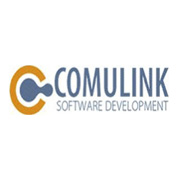
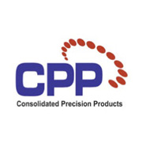
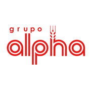
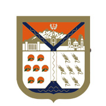
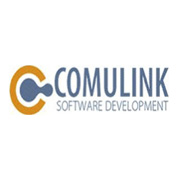
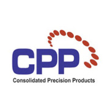
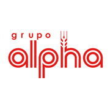
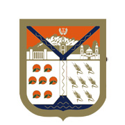


 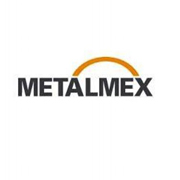
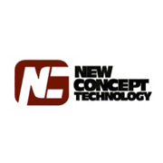
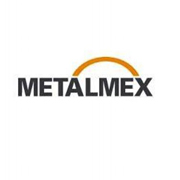
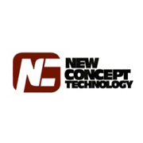
 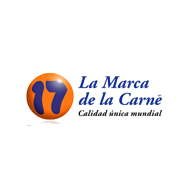
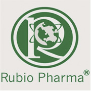
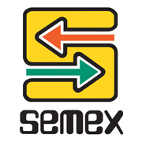
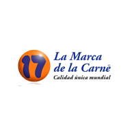
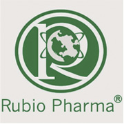
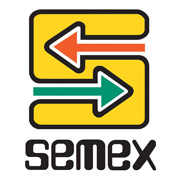


 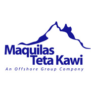
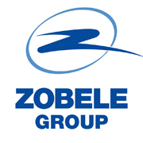
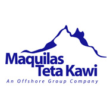
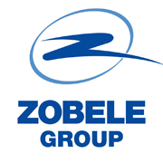
En 2012, según el Instituto Mexicano de Propiedad Intelectual (IMPI) , se registraron 553 patentes mexicanas. De acuerdo al IMPI capitulo Sonora en 2012, 12 patentes fueron registradas en el estado por lo cual la mitad de las patentes del Estado fueron proyectos de CISGO.
* El Tratado de Cooperación en materia de Patentes (PCT) permite buscar protección por patente para una invención en muchos países al mismo tiempo mediante la presentación de una solicitud “internacional” de patente.